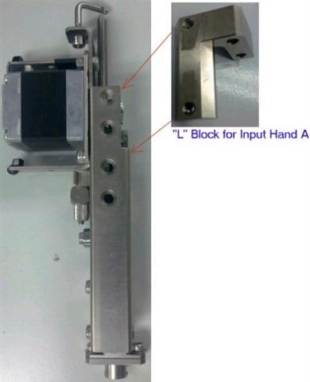

Service History
Subject: NS-8040 Input Hand A bend
Handler Model: NS-8040 (NS-004, 181671)
Controller: RC520
Date: 16 Jun 2010
Symptom
Was at Infineon to do the Input Hand A replacement for NS-8040(NS-004, 181671). However, after installation found that Hand A still bent.
Action
Took a Hand A “L” Block ( R35N800003400, Moving plate 3, H03-A500-004) from 175DegC NS-8040(NS-200).
Suspect that old original “L” block at NS-8040(NS-004, 181671) also bent.
So this “L” block put together with this new the Input Hand A, ok.
I did Input Hand A alignment, ok.
Did Auto Hand Height Calibration, ok.
Because, temporarily borrow “L” block from 175DegC NS-8040(NS-200) and Hidaka-san was with me.
(For 175DegC NS-8040(NS-200), Input Hand A has to be disabled by HMI software)

Cause